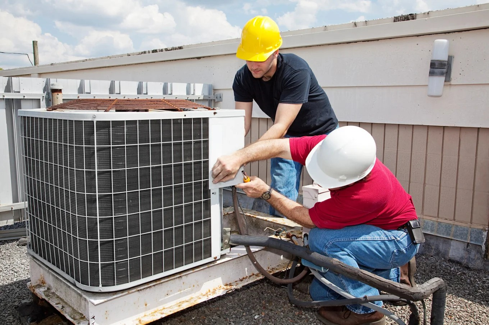
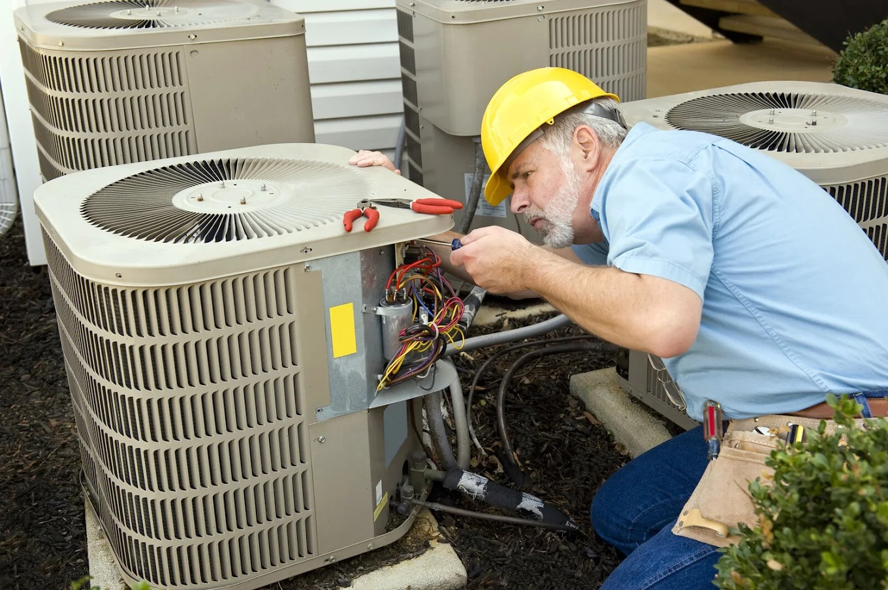

Latest HVAC Trends for Islip Terrace Homes in 2026
Bringing vibrant service to Islip Terrace.
All Service HeatingBringing vibrant service to Islip Terrace.
All Service HeatingThe HVAC industry is evolving faster in 2026 than at any point in the past two decades, and homeowners in Islip Terrace are positioned to benefit significantly from that momentum. New refrigerant standards, smarter control systems, and advances in heat pump technology are reshaping what Suffolk County residents can expect from their home comfort equipment. Understanding these changes before making purchasing decisions helps Islip Terrace homeowners avoid investing in technology that is already being phased out, and allows them to take full advantage of federal and state efficiency incentives that are currently available.
South Shore Long Island communities like Islip Terrace sit in a climate zone that historically favored dedicated heating and cooling systems operating independently. That paradigm is changing rapidly as heat pump technology matures to handle heating loads in temperatures well below freezing — a capability that was not reliable just five years ago. Homeowners near Connetquot River State Park Preserve and throughout the ZIP 11752 corridor are now serious candidates for all-electric heat pump conversions that deliver both heating and cooling from a single outdoor unit. The economics are compelling: modern heat pumps operate at 200 to 300 percent efficiency during moderate weather, compared to the 95 percent ceiling of the most advanced gas furnaces.
The shift to the A2L refrigerant standard — triggered by the phasedown of R-410A under federal environmental regulations — means that HVAC equipment purchased in 2026 and beyond will use mildly flammable refrigerants that require updated handling procedures and equipment design. For Islip Terrace homeowners, this transition matters at replacement time: R-410A systems cannot simply be retrofitted with the new refrigerants, and technicians working on A2L systems need updated certifications and specialized tools. Partnering with an HVAC contractor who has proactively trained their team on A2L handling is essential to avoid service gaps as the industry completes this transition over the next several years.
Smart thermostats, zone-control systems, and HVAC-integrated air quality monitors have moved from luxury add-ons to practical tools that pay for themselves in energy savings across the heating and cooling seasons on Long Island. A properly configured smart thermostat can reduce annual energy costs by 10 to 15 percent through occupancy-based scheduling and learning algorithms that anticipate comfort preferences. For multi-zone systems — increasingly common in the larger colonial and split-level homes throughout Islip Terrace — smart zone dampers allow different areas of the house to maintain different temperatures without running the full system at maximum output, dramatically reducing runtime hours and extending equipment life.
All Service Heating and Conditioning Inc. has been serving Islip Terrace as a full-service HVAC contractor in Islip Terrace NY since long before these technological shifts began reshaping the industry. The team at All Service has actively invested in training and certification for new refrigerant standards, heat pump installation techniques, and smart home integration — ensuring that Islip Terrace and Suffolk County homeowners who trust All Service have access to the most current technology without needing to vet multiple specialty contractors. With 92 Google reviews and a 4.2-star rating, All Service's reputation for keeping pace with industry change while delivering reliable workmanship is well established across the South Shore.
The two most consequential technology shifts for Islip Terrace homeowners in 2026 are the refrigerant transition and the expansion of cold-climate heat pump performance. The EPA's phasedown of high-GWP refrigerants under AIM Act regulations means that new HVAC equipment must use A2L-class refrigerants by the end of 2025, and systems currently running R-410A will gradually phase out of active manufacture. Simultaneously, heat pump technology from manufacturers like Mitsubishi, Fujitsu, and Carrier has advanced to reliable operation at outdoor temperatures as low as negative 13 degrees Fahrenheit — well below any temperature Islip Terrace experiences during a typical winter. These two trends together are accelerating the economics of heat pump adoption across Suffolk County, particularly for homeowners already considering equipment replacement.
Explore how expert HVAC services transform home comfort in Islip Terrace

Smart thermostat adoption in Islip Terrace and across Suffolk County has accelerated sharply as devices have become more affordable and easier to integrate with existing systems. Where early smart thermostats offered little more than remote scheduling, current-generation devices from leading manufacturers learn occupancy patterns, integrate with local weather data, and coordinate with utility demand-response programs that pay homeowners to reduce consumption during peak grid stress events. For a home in ZIP 11752 running a conventional forced-air system, the typical smart thermostat pays for itself in under two years through reduced runtime. All Service Heating and Conditioning technicians install and configure these systems during HVAC tune-ups, ensuring proper integration with both the heating system and any existing smart home platforms the homeowner already uses.
For Islip Terrace homeowners currently heating with oil — a large share of the housing stock throughout central Suffolk County — the 2026 landscape for heat pump conversion has never been more favorable. Federal tax credits under the Inflation Reduction Act offer up to 30 percent of installation costs for qualifying heat pump equipment, and New York State's clean energy programs provide additional incentives that can substantially reduce the net cost of conversion. Modern cold-climate heat pumps handle Long Island winters effectively, supplemented by a backup electric resistance strip or retained oil system for the rare extreme cold snap. Heat pump installation Long Island NY is a service All Service Heating and Conditioning Inc. has expanded significantly to meet growing demand from Islip Terrace homeowners ready to reduce their dependence on fuel oil deliveries and the price volatility that comes with them.

Indoor air quality has moved from a niche concern to a mainstream priority for Islip Terrace homeowners, accelerated by post-pandemic awareness and advances in affordable monitoring technology. Whole-home air purification systems that integrate directly with forced-air HVAC equipment — using MERV-13 filtration, UV germicidal irradiation, or bipolar ionization — are now standard recommendations rather than luxury upgrades for All Service customers. Central air installation Islip NY projects now routinely include IAQ system integration as part of the scope of work, particularly for households with allergy sufferers or young children. The coastal environment of Islip Terrace, with its elevated humidity and airborne particulates from nearby waterways, makes robust filtration especially important compared to inland communities.
Multi-zone HVAC has become the dominant approach for new construction and major renovation projects throughout Islip Terrace and the broader South Shore corridor. Where older homes relied on a single thermostat to control a whole-house forced-air system — creating inevitable hot and cold spots across different levels and exposures — modern zone systems divide the home into independently controlled areas. All Service Heating and Conditioning Inc. installs both ducted zone systems using motorized dampers and ductless mini-split configurations that deliver zone-level control without requiring ductwork modification. The company's technicians perform a thorough assessment of the existing duct layout before recommending an approach, ensuring that zone divisions make engineering sense for the home's specific layout and heating and cooling load distribution across seasons.
All Service Heating and Conditioning Inc. serves customers throughout Islip Terrace and Suffolk County, including Bay Shore, East Islip, Bohemia, Oakdale, Brentwood, Central Islip, Hauppauge, Ronkonkoma, and West Islip. Whether you're in a waterfront home near the Great South Bay or a ranch house in Brentwood, our HVAC contractor team is nearby.
Modern cold-climate heat pumps from Mitsubishi, Fujitsu, and Carrier are fully reliable for heating in Islip Terrace, NY. These units operate efficiently at outdoor temperatures well below freezing — down to negative 13 degrees Fahrenheit for some models — which covers the coldest temperatures Suffolk County typically experiences. All Service Heating and Conditioning Inc. sizes and installs these systems with appropriate backup heating capacity to ensure uninterrupted comfort through even the harshest Long Island winters.
The A2L refrigerant transition replaces R-410A with new low-global-warming-potential refrigerants in HVAC equipment manufactured from 2025 onward. For Islip Terrace homeowners, this means that replacement systems will use different refrigerant requiring updated service procedures. All Service technicians are fully trained on A2L handling and certified to work on the new equipment. If your current system still uses R-410A, it can continue to be serviced normally throughout its useful life — the transition only affects new equipment purchases.
Most Islip Terrace homeowners see annual energy savings of 10 to 15 percent after installing a properly configured smart thermostat — typically 100 to 200 dollars per year depending on home size and current utility rates. Homes in ZIP 11752 with older thermostats and conventional scheduling see the largest gains. All Service Heating and Conditioning Inc. installs and configures smart thermostats during routine service visits, including integration with multi-zone systems for additional savings potential.
In 2026, qualifying HVAC upgrades eligible for federal tax credits include cold-climate heat pumps, heat pump water heaters, and high-efficiency central air systems meeting specific SEER2 and HSPF2 thresholds. The Inflation Reduction Act provides a 30 percent credit on equipment and installation costs up to defined limits. New York State clean energy programs may stack additional incentives on top. All Service Heating and Conditioning Inc. can identify qualifying equipment during a system evaluation and help Islip Terrace homeowners document purchases for credit claims.
Homes in Islip Terrace are good candidates for HVAC zoning if they have multiple stories, large temperature variation between rooms, family members with different comfort preferences, or areas that are rarely occupied. Split-level and colonial homes — common throughout Suffolk County — particularly benefit from zoning because their floor plan geometry creates natural heating and cooling imbalances. All Service Heating and Conditioning Inc. performs a free zoning assessment during HVAC consultations, evaluating duct size, equipment capacity, and room-by-room load requirements before recommending a zoning approach.